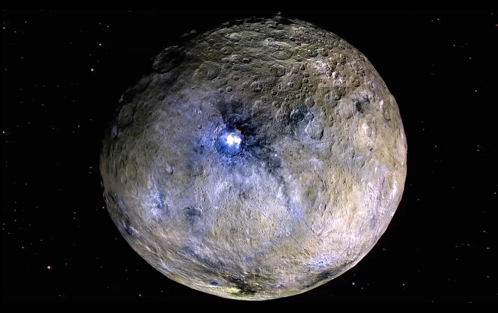
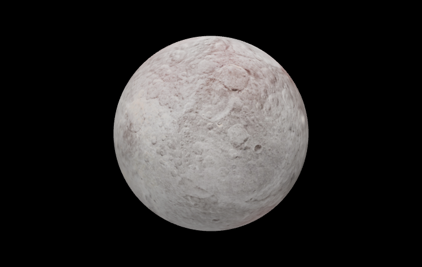
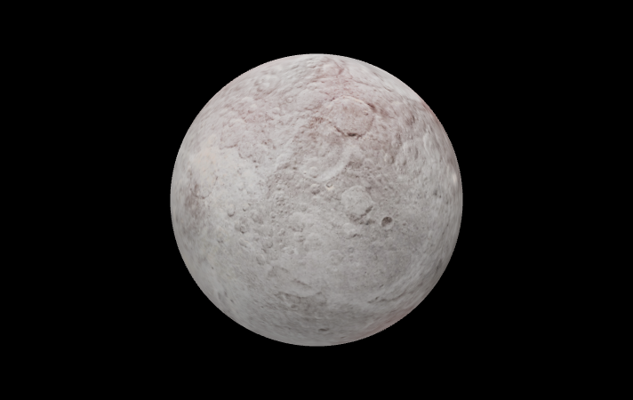

Dwarf Planets

| Planet Name: |
Distance From the Sun: |
Length Of The Day: |
Length Of The Year: |
Planet Type: |
| Pluto |
3,144,845,450 miles. |
153 Earth hours. |
90,530 Earth days. |
Dwarf Planet |
A dwarf planet is a planetary-mass object that is neither a true planet nor a natural satellite. That is, it is in direct orbit of a star, and is massive enough for its gravity to compress it into
hydrostatically equilibrious shape (usually a spheroid), but has not cleared the neighborhood of
other material around its orbit.

 

| Ceres: |
| Distance From the Sun: |
259,503,902 miles |
| Length Of The Day: |
9 Earth hours. |
| Length Of The Year: |
1,680 Earth days. |
| MakeMake: |
| Distance From the Sun: |
| Length Of The Day: |
| Length Of The Year: |